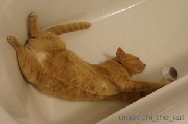
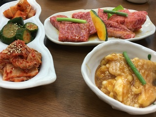
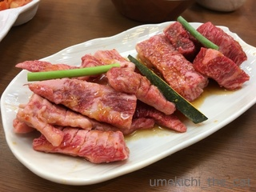
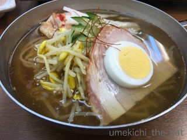
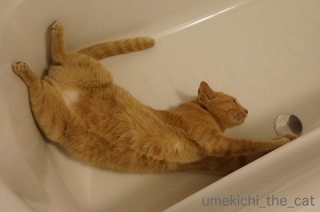
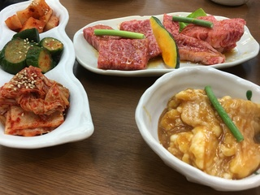
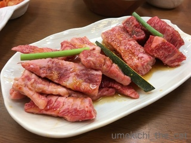
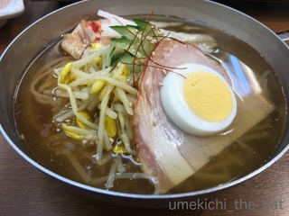

掃除監督 [梅吉]
バスルームを掃除していると来る。梅吉さんがやって来る！

![[猫]](https://blog.ss-blog.jp/_images_e/101.gif) はよう拭いたってや〜。
はよう拭いたってや〜。
バスタブで遊ぶのが大好きなので毎日拭き上げなければなりません。めんどくさっ。

くるんっ

くるりんっ

くるっ ドヤ顔w

にまぁ
なに笑ってるんですか。お掃除具合はよろしいでしょうか。
ちゃんと拭いておかないと濡れたところでも平気でくるりんしてしまいます。
そしてびしょびしょの足のまま、盛大に足跡をつけながらリビングに走っていく・・・・![[たらーっ（汗）]](https://blog.ss-blog.jp/_images_e/163.gif)

週末はお外で焼肉食べてきました。いやっほ〜。

大阪でもひときわディープなエリアにある板前焼肉一斗。初めて行った時はちょっとどきどきしました。
出てくるお肉に包丁が入って仕事がしてあります。
その辺が“板前”焼肉。
週末に行くなら予約が必須です。おいしかった![[黒ハート]](https://blog.ss-blog.jp/_images_e/136.gif)

バスタブで遊ぶのが大好きなので毎日拭き上げなければなりません。めんどくさっ。

くるんっ

くるりんっ

くるっ ドヤ顔w

にまぁ
なに笑ってるんですか。お掃除具合はよろしいでしょうか。
ちゃんと拭いておかないと濡れたところでも平気でくるりんしてしまいます。
そしてびしょびしょの足のまま、盛大に足跡をつけながらリビングに走っていく・・・・
週末はお外で焼肉食べてきました。いやっほ〜。

大阪でもひときわディープなエリアにある板前焼肉一斗。初めて行った時はちょっとどきどきしました。
出てくるお肉に包丁が入って仕事がしてあります。
その辺が“板前”焼肉。
週末に行くなら予約が必須です。おいしかった
2016-09-05 13:28
nice!(21)
コメント(9)

カフェオレ色の梅吉

梅吉 2023年8月10日 永眠


梅吉と出会った譲渡会

犬猫の理由なき殺処分ゼロ
妄想広告
UMEKICHI 光

爆発的に早い！
時々攻撃的！
Thanks to Mr.Boss365
爆発的に早い！
時々攻撃的！
Thanks to Mr.Boss365

梅吉さんのどや顔が可愛すぎますね♪
この笑顔を見れるなら
拭き掃除も頑張れそうですね(#^.^#)
by きぃ (2016-09-05 16:12)
なんてのびのび遊んでるんでしょう!!こんな顔で遊ばれたら拭くのが面倒でも遊ばせてしまいますね(*^_^*)
by palpal (2016-09-05 16:58)
やってくるところがかわいいですね。甘えてるのかな。(^^)
by はな (2016-09-05 17:57)
梅吉さん、なんか楽しそう♪ ^^)
by yes_hama (2016-09-05 21:20)
梅吉さん、カ、カワイイ・・・(*´▽｀*)
バスタブを満喫していますね(^_^;)
つーか、独特のチェック方法なのでしょうか！？
by ひでぷに (2016-09-05 21:51)
梅吉さん、自分の体を使って掃除の拭き具合をチェックされてるんですねぇ(^_^;)
by ニッキー (2016-09-05 21:56)
きぃさん＞日々バスタブだけは掃除が行き届いているのが自慢です。笑
palpalさん＞がんばって拭いてるんだから、ネタ提供たのむで〜、です^^
はな＞さんヒトが何か作業をしているととりあえず参加。
それがたとえ業者さんであっても・・・´д` ;
yes_hamaさん＞にまあ、ですから！絶対楽しいって笑ってる！！
ひでぷにさん＞髪の毛が1本でも落ちていると、くるりんしません。汗
じ〜〜〜っと見つめてます。小姑か！！
ニッキーさん＞そうなんです。「濡れた体で走り回られるのがイヤだっだら
キチンと掃除するがよい」・・・・です。涙
by ちぃ (2016-09-06 11:43)
楽しそう！ お遊びした後拭かないで このまんまお湯張りをしたら 梅の湯 猫毛っけで大変でしょうね ピカピカにお掃除が行き届いて 素晴らしいです 見習おう（＾０＾）
by テオ (2016-09-06 18:00)
テオさん＞梅の湯！良い響きです。梅毛ついつい流し忘れたりして・・・(^^;;
by ちぃ (2016-09-06 21:10)